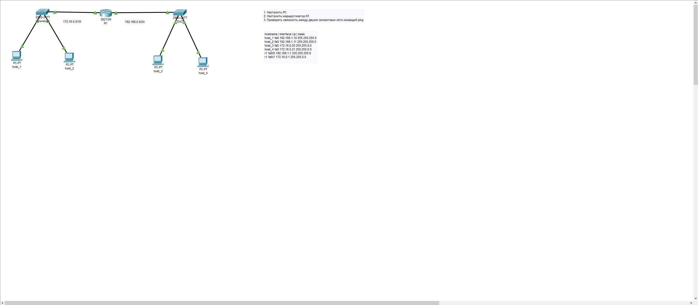
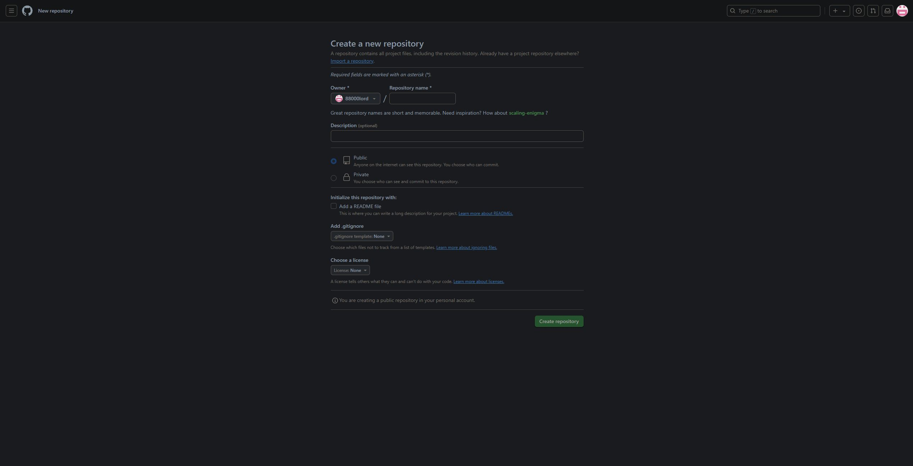
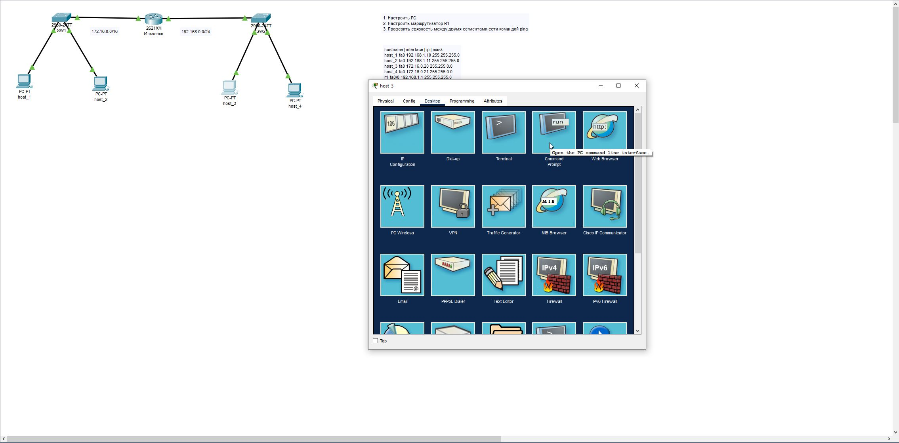
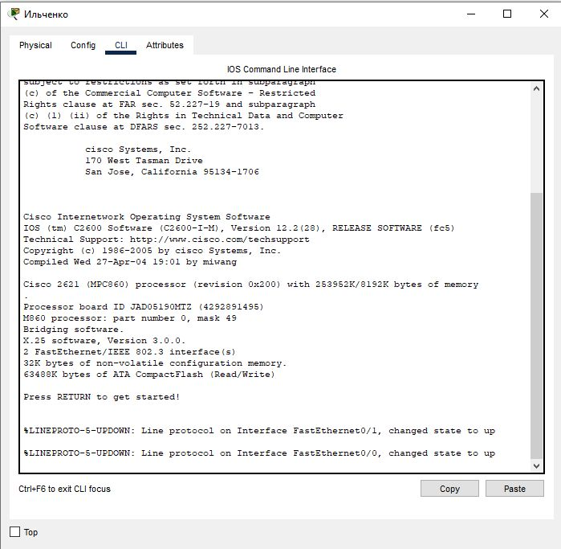
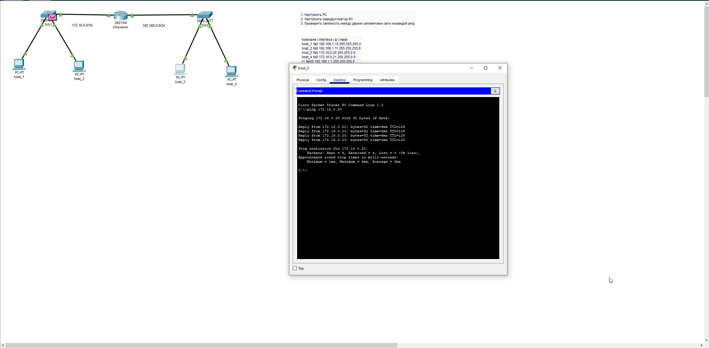

Автономная некоммерческая организация профессионального образования «Международная академия информационных технологий «ИТ ХАБ»
Задание "Проект по ОКС"
Ильченко Даниил Валерьевич
2025
Топология сети
Решил создать репозиторий именно на GitHub, так как из всех возможных вариантов больше всего знаком с ним
После создания пары и клонирования репозитория перешел к заданию в CPT. Настроил все ПК, добавив к каждому соответствующие IP-адреса
Настроив ПК, переименовал роутер и тоже настроил его
Затем проверил связность между двумя сегментами сети командой ping на каждом ПК и закончил работу
По итогу данного проекта:
Создан репозиторий на ГитХаб
Настроена безопасный доступ с репозиторием через SSH
Создана веб-страница с отчётом по проекту
Настроена сеть в CPT